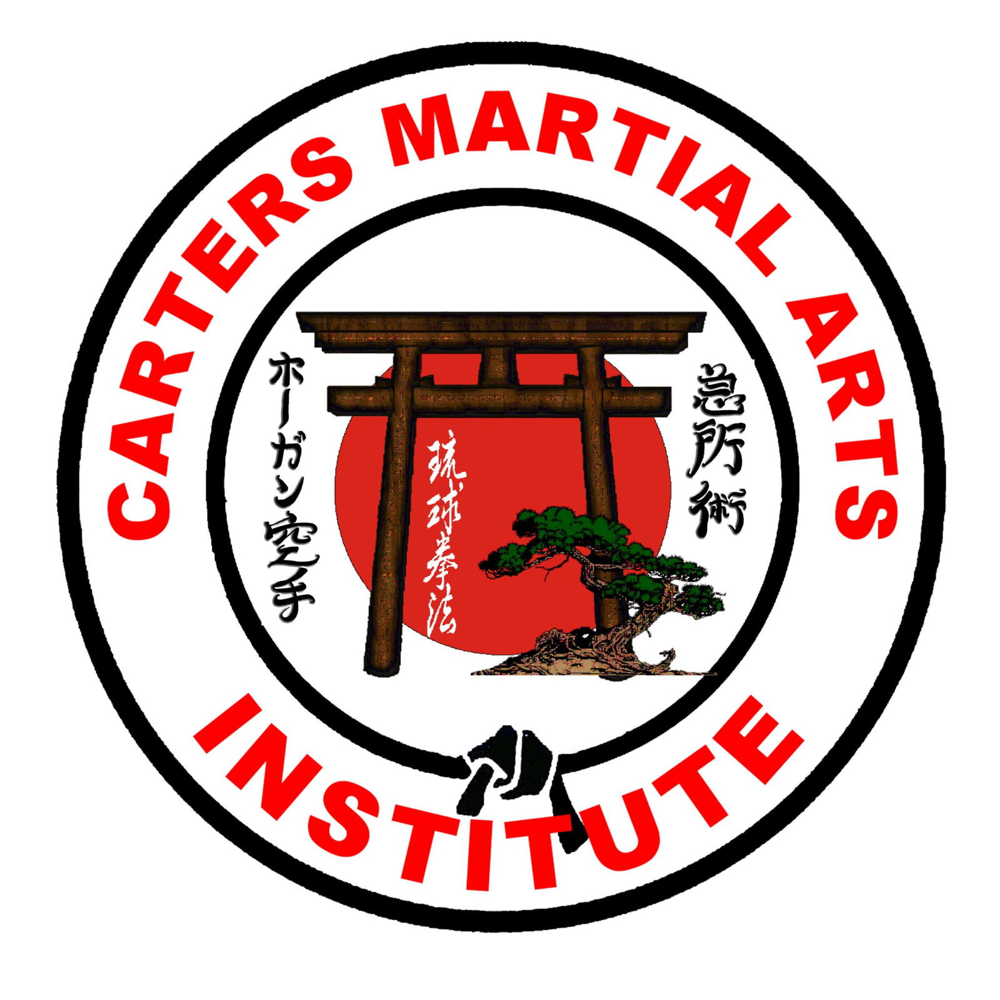
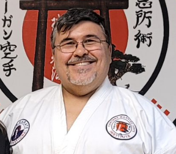
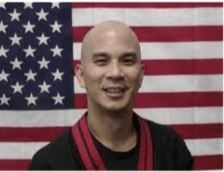

Okinawan Karate
Stances, strikes, blocks, kata, and application work that build strong fundamentals before intensity rises.
Learn moreOkinawan Karate, Small Circle Jujitsu, and Modern Arnis for kids, teens, and adults in Jacksonville.
Three traditional arts, one integrated approach to confidence, coordination, and practical self-defense.

Stances, strikes, blocks, kata, and application work that build strong fundamentals before intensity rises.
Learn more
Leverage, balance, and safe joint-control principles connected back to Okinawan tuite and partner drills.
Learn more
Stick work, timing, disarms, and empty-hand translations that sharpen structure under pressure.
Learn moreA weekly rhythm for families, beginners, and continuing students. Event and testing dates are announced in class and on Facebook.
A small sample of public reviews from families and students.
Core terms students will hear in class.